Designing for Problems, Not Pages: Login.gov Support
PRODUCT
Content
2024–2025
Background
In late 2024, I joined Team Annie at Login.gov with the goal of redesigning the Login.gov Help Center. At the time, user satisfaction with help articles was low (averaging 48%), leading to an increased burden on the contact center team due to a higher volume of calls.
My Role
I led the overhaul of the Help Center, leading the interaction, content, and prototyping efforts. This initiative aimed to improve support for users struggling with authentication and identity verification. I collaborated with our researcher, Shqiponja Hoxha Ocumarez, to conduct usability testing.
The Challenge
Prior internal research indicated structural issues within the Login.gov Help Center. A tree-testing study conducted by the team revealed that users frequently struggled to locate information for common account and identity-related issues, even when the correct content existed.
The study showed a low overall success rate and repeated patterns of users navigating to the “right” section initially, then stepping back after encountering unclear labels or ambiguous article groupings. This suggested a mismatch between how the Help Center was organized and how users framed their problems.
"The study reported an overall task success rate of roughly one-third, indicating that most users could not confidently predict where to find help."
– Shqiponja Hoxha Ocumarez, User Researcher
These findings established that the core challenge was not content coverage, but information architecture, labeling, and navigation that failed to align with users’ problem-first mental models.
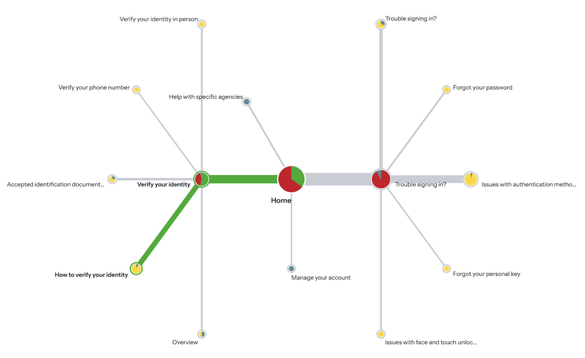
This diagram shows that most users failed to find the correct help section for ID card upload issues.
How might we ensure Login.gov users can easily and quickly get the right information to successfully complete tasks without needing additional support?
Here's why it matters:
- Login.gov is a critical gateway to government services. Any delay in access can cause profound damage to people's lives.
- Users have varying levels of technical familiarity. Relevant troubleshooting guidance should be straightforward and easy to find.
- Existing help articles were not effectively meeting user needs, reflected by a user satisfaction rate of only 48%.

The Help Center of 2024
The Help Center's design remained unchanged since its 2021 launch, with additions only to help articles. The video below illustrates the following issues users would face when coming to the original help center:
- Users have to navigate five main categories to locate their specific topic.
- If they select the wrong topic or article, they would have to scan through the less prominent right-side navigation.
- Once they're in an article, they often have to scroll through long pages of content before finding relevant troubleshooting information.
Comparative Analysis
To generate some initial ideas, I decided to perform a comparative analysis to identify common design and content approaches across a range of industry-leading help centers.
This included: Google, Apple, Paypal, ID.me, Microsoft, Amazon, FedEx, Wealthfront, Dyson, and Samsung. Below are some best practices I identified in my analysis.
1. Popular questions and FAQs are displayed upfront
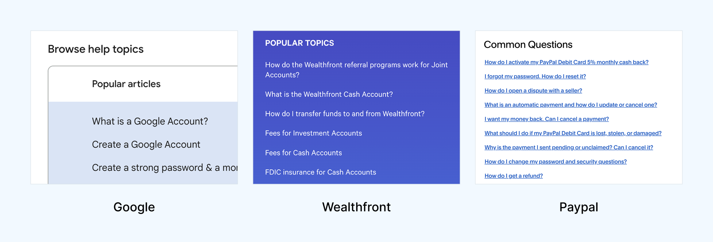
9/10 help sites featured popular issues or FAQs prominently at the top of the page. 5/10 framed these as “Popular topics”, “FAQ”, “Common questions”, or “Trending Topics”.
2. Question-based article titles over technical titles
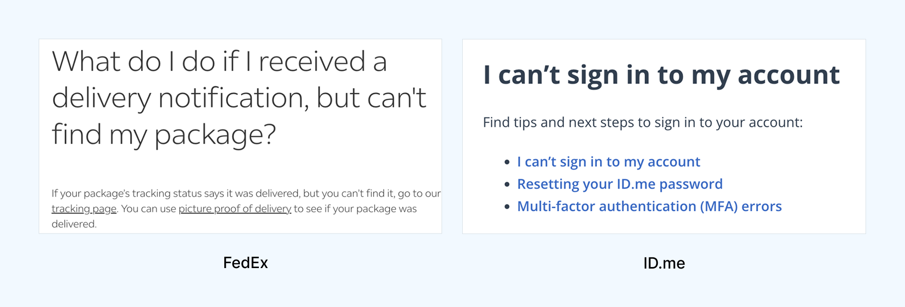
7/10 help sites framed user issues through first-person questions like "What do I do if..." or "I can't sign in..."
The original Login.gov help center used second-person language like "Add or change your authentication method" or impersonal titles like "Help with agencies".
3. Progressive disclosure reduced cognitive overload
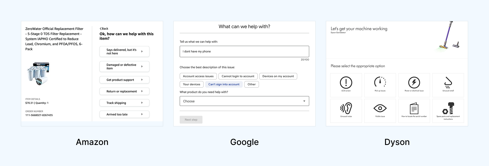
6/10 help sites utilized the principle of progressive disclosure through collapsible accordions or paginated, step-by-step processes to diagnose user issues.
This makes it easier for users to process information and make decisions to find solutions on their troubleshooting journey.
4. Left side navigation was standard

8/10 help sites featured a persistent left side navigation or related articles section within the context of a help article.
It was doubly important that we switched over to a left side navigation since it was a U.S. Web Design Systems standard.
Designing Prototype B
Using Figma, I designed this prototype to prioritize speed and scannability by highlighting the most likely issues on the landing page, nesting detailed information within accordions, and creating navigation subsection links.
Popular topics on the landing page: By using the first-person question framing, the user should have an easier time finding the specific help article related to their issue.
Accordions contain additional detailed information: Longer help articles could be broken up into smaller sections using accordions to help with scanning.
Left side navigation with anchor links to subsections: Users can easily scan and quickly navigate to the relevant section of the article by clicking on the subsection titles in the navigation.
Designing Prototype C
This design emphasized granularity by segmenting troubleshooting into a step-by-step diagnostic process. Users would be asked a series of questions and be given simple instructions before taking them to a longer form help article.
This approach was inspired by Dyson and Amazon's conversational approach to troubleshooting, segmenting information to make it less overwhelming for users.
Testing Scenarios
We conducted a remote moderated A/B/C usability test with 12 participants on desktops, comparing the existing help center (A) against the two prototypes (B and C). Participants were split into four groups: A/B, B/A, A/C, and C/A. This was done to reduce potential recency bias.
We walked participants through two tasks:
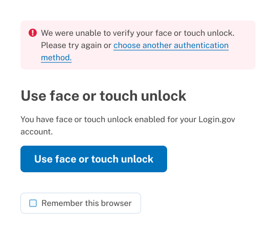
Task 1: Authentication
You are trying to sign in and authenticate to access healthcare benefits for the first time. You are having issues authenticating with your iCloud account for face or touch unlock so you go to the Help Center to solve your issue.
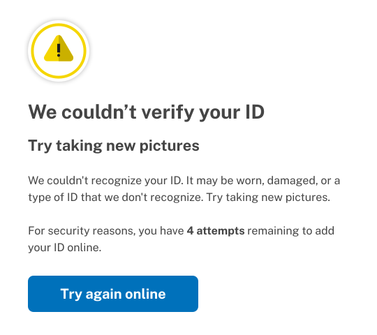
Task 2: Identity Verification
You are trying to verify your identity with the Trusted Traveler’s Program to get TSA Precheck. You are having issues taking photos of your ID so you go to the Help Center to solve your issue.
Usability Testing Findings
10 out of 12 participants were more successful with either Prototypes B or C over the current live help site. They experienced quicker task resolution and improved ease of use as evidenced by the following findings below.
"It was easier. You're taking me through the steps to solve my problem instead of leaving me to figure it out."
Finding #1: Framing articles from the perspective of the user improved clarity and speed
"I feel like I’m on the right page because I see that this is my question."
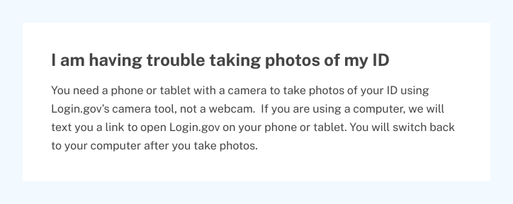
Problem-focused, natural language article titles (e.g., "I'm having trouble with face or touch unlock") improved solution-finding success compared to technical terms ("Authentication method issues").
Prototype B, which framed article titles from the user's perspective, helped 5 out of 6 participants identify relevant help content faster and more accurately.
Finding #2: Accordion layouts improved scannability
"I like the ability to collapse... looking through 5 or 6 dropdowns makes it easier. Long pages are overwhelming—I just scroll and hope something jumps out."

Excessive page length overloaded users, hindered self-service and increased support reliance.
10 of 12 participants found the current long articles on the live help center overwhelming. Breaking content into collapsible accordions in Prototype B reduced cognitive overload, allowing participants to quickly find solutions without scanning the full article.
Finding #3: Users wanted step-by-step troubleshooting, not just definitions
"What action do I take if I’m having trouble logging in? It just says what it is, not how to fix it."

Participants would mistakenly land on definitional articles or get lost in paragraphs of irrelevant content before finding troubleshooting info.
Prototype C was more effective, with 5 out of 6 participants locating the correct help content faster and feeling more confident, compared to the live site. This was achieved by distinguishing troubleshooting pages and modules from purely informational content.
Finding #4: Left side navigation matched user expectations
"It seems funny that all of these topics are on the right side. I’m used to seeing them on the left."
5 out of 12 participants missed the right-side navigation on the live site until we prompted them to use it. They overlooked links to relevant articles and consequently took longer to find their solution.
All 6 participants who used Prototype B used the left-side navigation unprompted and found solutions quicker using parent links to switch articles and child links to navigate within an article. By moving the navigation left and upgrading its links we aligned with user mental models, web conventions, and the USWDS design system.
Finding #5: Visual aids increased comprehension
"The green ‘do’ and red ‘don’t’ made it super obvious what to do."
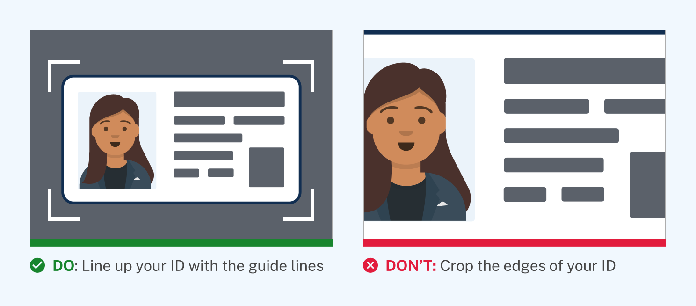
Participants preferred the "Do" or "Don't" labeling of images in the prototypes since it made it abundantly clear how to solve their ID verification issue. In addition, visual communication is especially helpful for users with limited English or digital literacy.
Outcomes & Impact
After the usability study, the team decided to implement Prototype B's design due to the following factors:
- Clearer navigability: by presenting issues as first-person questions and nesting granular content within accordions, we reduced scrolling and allowed participants to locate their solution more quickly.
- Easier troubleshooting: participants could follow simple numbered steps punctuated by illustrations and relevant links to more quickly solve their issue.
- Faster implementation: since Prototype B preserved most of the existing Help Center structure while adding improvements, it offered a solution that could be immediately moved into design and development.
This redesign let me lead deeply across content strategy, interaction design, and user research. Our comparative analysis and usability testing enabled us to make targeted improvements that helped users get to their answers faster, feel more confident, and reduce the burden on support teams.
Extending from Web to Phone Support
As part of the Help Center redesign, I examined the broader Login.gov support ecosystem, including self-service content, interactive voice response (IVR), and live agents. These channels function as a single service, but were optimized independently.
Login.gov Contact Center data revealed that nearly half of incoming calls bypassed automated support and required live agents. This created failure demand or situations where users reached human support not because their issue was complex, but because earlier service touchpoints failed to guide them correctly.
We collaborated with the Login.gov Contact Center to test whether aligning the IVR to the new Help Center's user problem framing and new progressive disclosure principles could rebalance the service.
Issues with the Original IVR
To begin, we gave the Login.gov Contact Center a call to listen to the IVR to put ourselves in the shoes of a user looking for help. Each of us took notes on our experience and found overlapping problem areas to highlight.
The first major issue we noted was the long winded intro and outro disclaimers. The intro took nearly 30 seconds to get through before the caller was given the list of help topics to choose from. If we could shave off unnecessary content from these disclaimers we could get callers to their solution quicker.

We pulled data from the Contact Center that showed that the popularity of topics did not reflect the order of how they should be listed.
- Identity verification was the most popular topic, yet it was listed second.
- Third was Security & Privacy information—which being an informational topic—needed less priority as people were more likely to call for troubleshooting.
- Fraud activity had the smallest amount of engagement yet it sat high as the fourth topic listed before more relevant partner topics like Social Security Administration (SSA) or Office of Personnel Management (OPM).
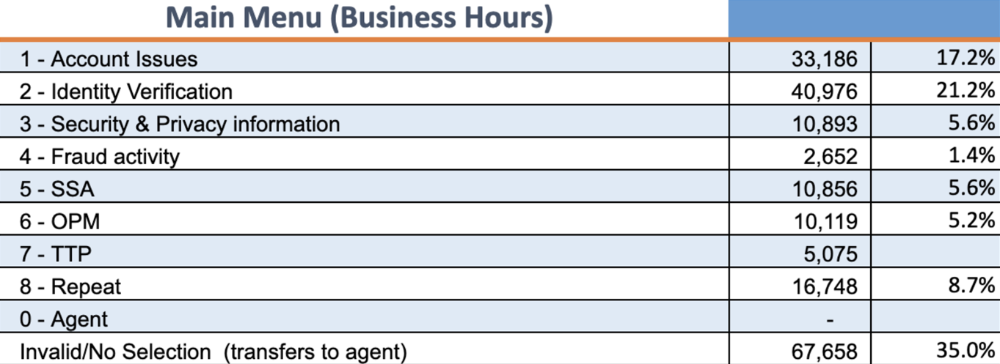
The original IVR's help topic structure (shown below) reflected internal categorizations and were not ordered by the popularity of user-reported issues. As a result, callers had to listen through irrelevant topics and frequently selected incorrect paths, increasing misdirected cases and agent workload.

Applying Data & New Design Principles
Using the data we gathered from the Contact Center, we outlined a new information structure that reflected topic popularity, and nested more granular troubleshooting options into subtopics, much like we had in the new Help Center.
We also made the intro disclaimer as concise as we possibly could and included a last attempt to get users back to the Help Center for self service support like changing their password or updating their email address.
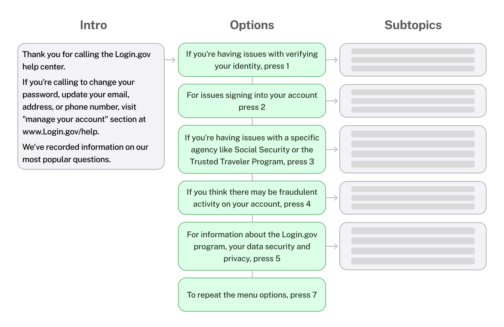
To make the IVR even more robust, we added additional subtopic options with troubleshooting content sourced directly from our new Help Center articles. This gives callers a potential solution to their problem before having to speak with an agent.
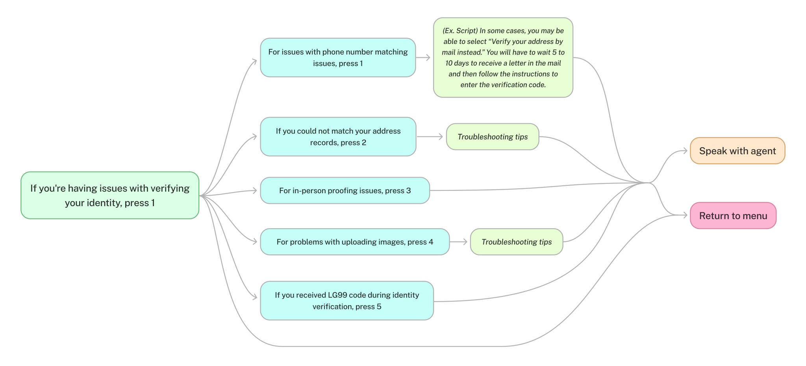
Outcomes & Impacts
Following a week long sprint of UX workshops with researchers and support staff to redesign the phone tree, we reduced IVR options from 8 down to the 5 most frequent issues with nested subtopics (much like in the new Help Center).
After implementation, the percentage of calls handled by the IVR increased from 55% to 83%, while misdirected cases dropped from 44% to 21%, reducing call volume and allowing agents to focus on more complex, high-touch support needs.